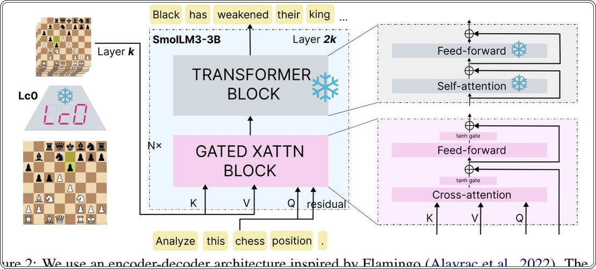
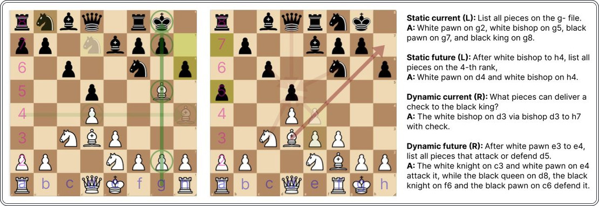
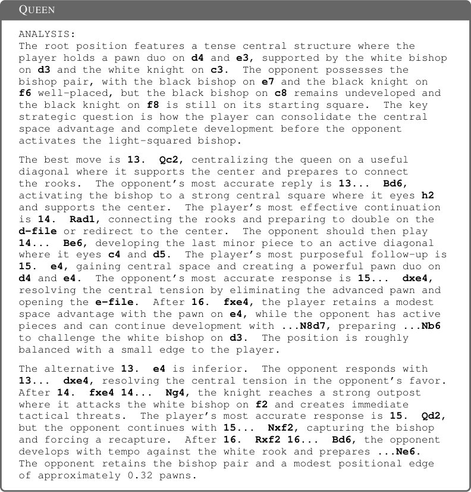
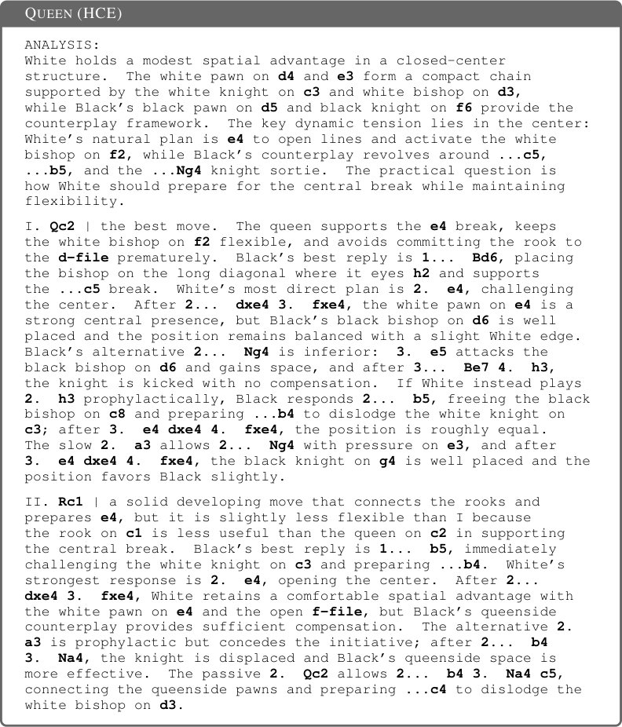
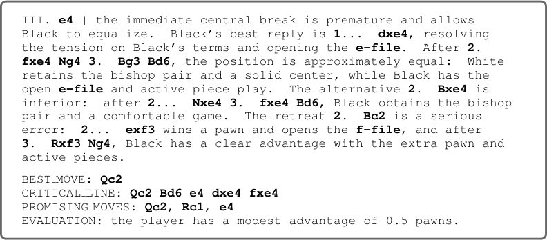
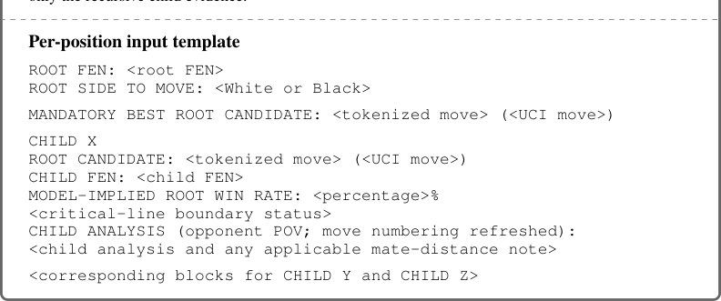
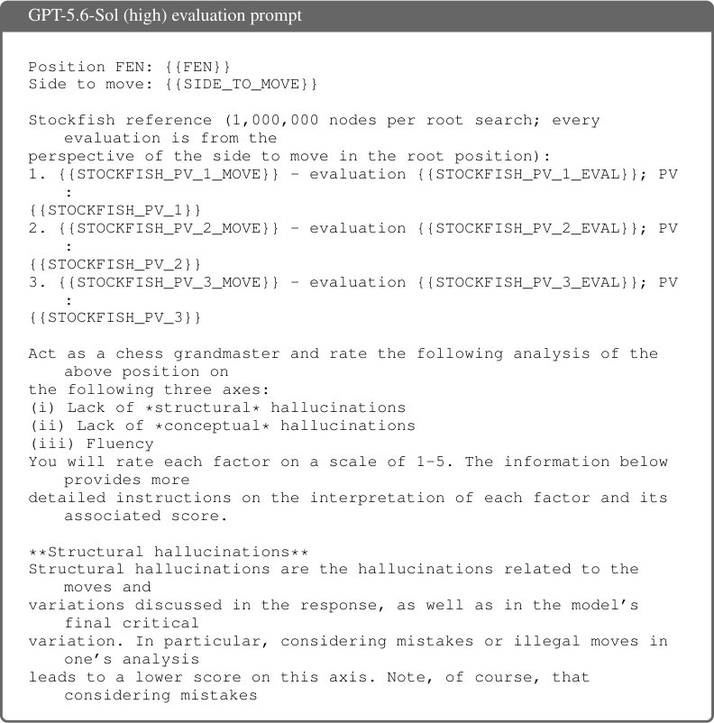
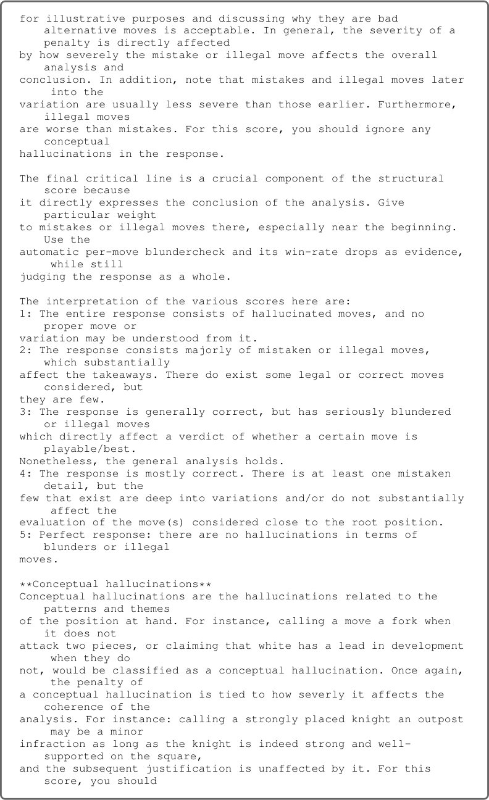
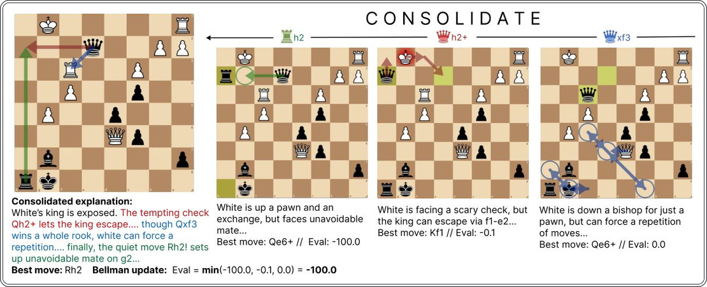

Почему шахматные движки молчат: учим ИИ объяснять свои ходы


Современные шахматные движки играют на сверхчеловеческом уровне, но не могут объяснить свои решения. Исследователи из Принстона представили QUEEN — модель с 4 млрд параметров, которая сочетает экспертный шахматный энкодер с языковым декодером. Благодаря итеративному обучению модель достигла уровня гроссмейстера, сохранив при этом способность давать связные и точные пояснения.
Главное
- Модель QUEEN достигла рейтинга 2697 Elo, что соответствует уровню гроссмейстера.
- Итеративная дистилляция позволила модели вырасти на 900 пунктов Elo за семь циклов.
- Архитектура сочетает экспертный движок Lc0 с языковым декодером через кросс-внимание.
Подробнее
Архитектура QUEEN использует принцип «молчаливого эксперта»: энкодер на базе движка Lc0 (Leela Chess Zero) передает шахматные концепции в языковую модель через механизм кросс-внимания (cross-attention). Обучение проходит в два этапа: сначала через учебную программу «вопрос-ответ» для понимания состояний доски, затем через итеративный алгоритм дистилляции, вдохновленный уравнением Беллмана. В процессе семи итераций модель улучшила свой рейтинг на 900 пунктов, достигнув 2697 Elo.
Система оценивается по трем критериям: точность (сила игры), обоснованность (тактические задачи) и связность (качество текста). В тестах QUEEN превзошла такие модели, как GPT-5.6-Sol и Gemini-3.1-Pro, при этом имея на порядки меньше параметров. Метод позволяет связывать узкоспециализированные «черные ящики» с языковыми моделями, что открывает путь к объяснимому ИИ в робототехнике и других сложных областях.
Ограничения
Исследование ограничено шахматной средой, а качество объяснений напрямую зависит от вычислительной мощности базового экспертного энкодера.
Подробный разбор статьи
Резюме
Современные шахматные движки демонстрируют игру сверхчеловеческого уровня, однако они не способны вербализовать логику своих решений. Языковые модели (LLM), напротив, могут генерировать связные объяснения, но их собственный уровень игры остается низким. Авторы представляют QUEEN — шахматную языковую модель с 4 миллиардами параметров, сочетающую мастерство уровня гроссмейстера с возможностью объяснять свои ходы и стратегические планы.
Важно
Модель QUEEN достигла уровня игры 2697 Elo, увеличив свой рейтинг на 900 пунктов за семь итераций обучения.
Разработчики применили архитектуру «энкодер-декодер», объединяющую специализированный шахматный энкодер («молчаливый эксперт») с языковой моделью, настроенной на выполнение инструкций. Интеграция происходит через механизм кросс-внимания. Обучение строится на программе «вопрос-ответ», позволяющей модели извлекать шахматные концепции непосредственно из представлений энкодера.
Пояснение
Энкодер-декодер — это архитектура нейросети, где энкодер сжимает входные данные (в данном случае позицию на доске) в векторное представление, а декодер преобразует его в понятный человеку текст.
Для улучшения качества объяснений авторы использовали итеративный алгоритм дистилляции, аналогичный уравнению Беллмана. Модель анализирует позиции после своих лучших ходов, объединяет эти данные в текстовое пояснение текущей ситуации, а затем «дистиллирует» (переносит) этот опыт обратно в свои веса. В ходе семи итераций рейтинг модели вырос с 1782 до 2697 Elo. QUEEN превосходит существующие модели как по силе игры, так и по точности решения шахматных задач, при этом количество параметров модели на три порядка меньше, чем у крупных аналогов. Оценки на основе LLM подтверждают, что качество объяснений модели приближается к уровню GPT-5.6-Sol.
Осторожно
Модель обучалась в специфических условиях шахматного домена; эффективность данного метода для других областей требует дополнительной проверки.
Введение
КОРОЛЕВА
С 1950 года, когда Клод Шеннон заложил основы теории шахматных машин, эта игра стала эталоном для оценки прогресса в искусственном интеллекте. Традиционные шахматные движки достигли выдающихся успехов, однако они не способны объяснить логику своих решений. С другой стороны, современные языковые модели (LM) могут генерировать пояснения, но их игровая сила значительно уступает специализированным движкам. Авторы представляют QUEEN (QUality Explanation and Evaluation Network) — архитектуру типа «энкодер-декодер», которая сочетает уровень игры гроссмейстера с возможностью давать качественные текстовые обоснования ходов. По состоянию на 2 октября 2026 года в мире насчитывается 1899 гроссмейстеров, что составляет менее 0,01% от всех активных игроков онлайн.
Важно
QUEEN объединяет мощь движков уровня гроссмейстера с интерпретируемостью, позволяя ИИ не только выбирать лучший ход, но и объяснять его на естественном языке.
СВЯЗАННЫЕ РАБОТЫ
Традиционные шахматные движки работают путем поиска по дереву вариантов и оценки позиций с помощью скалярного значения в сантипешках, которое конвертируется в вероятность победы. Современные системы, такие как Stockfish, перешли от сложных рукописных функций оценки к нейронным сетям. Модели на базе архитектуры Transformer, включая Leela Chess Zero (Lc0), обеспечивают игру, близкую к сверхчеловеческой. Существуют также модели, ориентированные на имитацию человеческого стиля игры (Maia, Allie), однако они не предоставляют вербальных объяснений своих действий.
Пояснение
Сантипешка (centipawn) — единица измерения преимущества в шахматных движках, равная 1/100 пешки.
В области языковых моделей исследования показали, что авторегрессионные трансформеры могут обучаться игре в шахматы, но адаптация готовых моделей общего назначения к этой задаче затруднена. Предыдущие попытки создания комментариев к партиям часто ограничивались описанием уже сделанных ходов или извлечением скрытых концепций из движков. QUEEN отличается тем, что модель сначала самостоятельно выбирает ход, а затем обосновывает его. Авторы подчеркивают, что качество объяснения напрямую зависит от силы игры: поскольку QUEEN демонстрирует более высокую игровую силу по сравнению с предыдущими методами, генерируемые ею пояснения обладают более высоким качеством.
Осторожно
Эффективность объяснений QUEEN напрямую зависит от точности выбора хода; если модель ошибается в оценке позиции, её аргументация может быть логически последовательной, но фактически неверной.
QUEEN: НАШ ПОДХОД
Цель проекта QUEEN — создание текстовых пояснений к шахматным позициям на естественном языке. Качественное описание включает три элемента (Рис. 3): рекомендацию лучшего хода, прогнозируемую основную линию (PV) и текстовое обоснование. Рекомендация указывает конкретный ход, PV демонстрирует его последствия, а текст объясняет логику, включая анализ альтернатив. Для реализации используются два типа моделей: специализированные шахматные движки (Transformer-based), играющие на сверхчеловеческом уровне, и универсальные языковые модели (LM), способные к генерации связного текста, но не обладающие шахматными знаниями. Движки не приспособлены для генерации текста, а LM — для анализа игры. Преимущество в шахматах измеряется в сантипешках (1/100 пешки).
Важно
Система QUEEN объединяет шахматный движок Leela (240 млн параметров) и языковую модель SmolLM3 (3 млрд параметров) для генерации экспертных комментариев к ходам.
3.1 АРХИТЕКТУРА
Шахматный энкодер. Мы используем сеть BT5 из семейства Lc0 (Leela). Это модель типа «только энкодер» с 15 слоями, скрытой размерностью 1024 и 240 млн параметров. Она работает с последовательностью из 64 токенов (по числу клеток доски) и достигает высокого уровня игры без поиска по дереву вариантов.
Языковой декодер. В качестве декодера выбрана модель SmolLM3-3B (36 слоев, размерность 2048). Это модель общего назначения, прошедшая инструктивную настройку, но не имеющая специальной шахматной подготовки.
Пояснение
Энкодер переводит шахматную позицию в математическое представление, а декодер преобразует эти данные в понятный человеку текст.
Архитектура моста. Мы используем механизм перекрестного внимания (cross-attention), вдохновленный архитектурой Flamingo. В отличие от Flamingo, где используется только последнее состояние энкодера, мы связываем каждое состояние энкодера e_i с соответствующим слоем декодера d2i. Это позволяет декодеру обращаться к промежуточным представлениям шахматной позиции на разных этапах обработки.
Поток данных. Модель принимает на вход пару (FEN, текст). Строка FEN (нотация Форсайта-Эдвардса) обрабатывается Leela, создавая контекст, который передается в SmolLM через слои перекрестного внимания. Это позволяет декодеру учитывать шахматную позицию на каждом шаге генерации текста. Мы провели абляционные исследования, тестируя другие декодеры (Qwen, Gemma) и альтернативные методы интеграции данных (LLaVA-подобная архитектура).
Осторожно
Модель опирается на архитектурные решения, где точность зависит от качества сопряжения шахматных признаков энкодера с языковыми слоями декодера.
Адаптация домена: интерпретация скрытых состояний энкодера
Предыдущие исследования показали, что нейросеть Leela Chess Zero кодирует ключевые аспекты шахматных позиций, включая расстановку фигур, доступные ходы и тактические варианты. Цель этапа адаптации домена — обучить декодер извлекать эти скрытые признаки из представлений Leela. Для этого был создан набор данных «вопрос-ответ», где каждый пример включает позицию p (в формате FEN) и запрос q. Запросы касаются либо текущей позиции p, либо позиции p', достигнутой через 1–8 ходов. Позиции взяты из открытого набора данных Lichess.
Важно
Модель PAWN обучается извлекать шахматные знания из скрытых состояний Leela через четыре типа задач: от статического анализа текущей доски до прогнозирования будущих состояний.
Запросы делятся на четыре категории (см. Рис. 4): 1. STATIC-CURRENT: определение фигур на полях или поиск координат конкретных фигур. 2. DYNAMIC-CURRENT: анализ правил, например, поиск всех легальных ходов, взятий или шахов. 3. STATIC-FUTURE: реконструкция позиции после серии ходов и последующий статический анализ. 4. DYNAMIC-FUTURE: сочетание реконструкции будущего состояния с анализом тактических возможностей.


Пояснение
FEN (Forsyth-Edwards Notation) — стандартная нотация для описания текущей расстановки фигур на шахматной доске в виде одной текстовой строки.
Чтобы избежать проблем с токенизацией названий фигур и полей, авторы добавили специальные токены для всех 64 полей и 12 типов фигур. Обучение проводится последовательно: от STATIC-CURRENT к DYNAMIC-FUTURE. На каждом этапе вопросы предыдущих стадий частично повторяются, чтобы предотвратить «катастрофическое забывание». В процессе обучения энкодер и декодер заморожены, обновляются только параметры cross-attention и новые эмбеддинги токенов. Итоговая модель получила название PAWN (Position AWare Network).
Итеративная дистилляция поиска: улучшение качества объяснений
После адаптации к предметной области модель PAWN научилась отвечать на структурированные вопросы по шахматам, однако ей не хватало примеров желаемого формата объяснений. Для решения этой задачи авторы использовали 15 000 позиций из игр и задач Lichess, для которых модель GPT-5.6-Sol(low) сгенерировала эталонные пояснения. Каждое пояснение включало прогноз лучшего хода, основную линию (PV), текст на естественном языке, три перспективных хода и оценку позиции (Рис. 3). После фильтрации ответов с недопустимыми ходами или ошибками была проведена дообучающая настройка (SFT), в результате чего появилась модель PAWN-1. Несмотря на связность текста, PAWN-1 часто рекомендовала некачественные или запрещенные правилами ходы из-за ограниченных способностей «учителя» и малого объема обучающей выборки.
Важно
Итеративный процесс дистилляции позволил улучшить качество объяснений, перейдя от первой версии PAWN-1 к финальной модели QUEEN (PAWN-8) через семь циклов обучения.
Для улучшения качества авторы применили подход, вдохновленный AlphaZero: многократное использование поиска (MCTS) для получения улучшенных оценок, которые затем дистиллируются в нейросеть. В данном случае MCTS был заменен на альфа-бета поиск, что представляет собой аналог итерации по Беллману для естественного языка. Процесс обучения PAWN-(k+1) из PAWN-k включает пять этапов: выборка 400 000 позиций из партий с движком Stockfish, игр людей на Lichess и шахматных задач; генерация объяснений; рекурсивный поиск до тех пор, пока все три предложенных хода не станут безошибочными (или не будет достигнута глубина рекурсии); консолидация объяснений с помощью модели Qwen3.8-27B; и финальное обучение на отфильтрованных данных. Ошибка определяется как ход, снижающий ожидаемый процент побед на 10% и более по сравнению с эталонным движком Stockfish.
Пояснение
Итерация по Беллману — метод обучения, при котором модель постепенно улучшает свои предсказания, опираясь на оценки более глубокого поиска, «запоминая» правильные решения.
Оценки
Качество объяснений оценивается по трем критериям: точность (рекомендация близких к оптимальным ходов), обоснованность (анализ альтернативных вариантов) и связность (грамотный текст, отсутствие галлюцинаций). Точность проверяется через симуляцию полных партий с расчетом рейтинга Elo (Раздел 4.1), обоснованность — через способность модели генерировать безошибочные основные линии (PV) на отложенных позициях (Раздел 4.2), а связность — с помощью оценки другой языковой моделью (Раздел 4.3). В качестве базовых моделей для сравнения выбраны GPT-5.6-Sol, GPT-5.6-Luna, Gemini-3.1-Pro и C1-4B.
Осторожно
Оценка точности основана на симуляциях против фиксированных противников; результаты могут зависеть от выбранных параметров поиска и вычислительных бюджетов.
Точность в симуляциях полных партий
Модель QUEEN продемонстрировала уровень игры, сопоставимый с гроссмейстерским, превосходя показатели моделей Gemini, SOL, LUNA и C1-4B.
Обоснованность на отложенных позициях
Для оценки обоснованности используется показатель отсутствия ошибок (NMR) в предсказанной основной линии (PV) и показатель отсутствия ошибок в первом ходе (FNMR). Тестирование проводилось на 1 000 тактических задач с рейтингом сложности от 609 до 2905 на Lichess, требующих точной последовательности ходов.
Сравнение точности и обоснованности
Для оценки качества предсказаний модели тестировались на тактических задачах и на 1000 позиций из реальных партий людей. Использовались метрики NMR (точность выбора хода) и FNMR (точность обоснования продолжения). Модель QUEEN показала лучшие результаты: в тактических задачах она опередила GEMINI на 2% по NMR и на 9% по FNMR, значительно превзойдя базовую модель SOL и C1-4B.
Важно
QUEEN демонстрирует наилучшую точность и обоснованность ходов, превосходя другие модели как в тактических задачах, так и в общих позициях.
Когерентность при оценке языковой моделью
Качество текста оценивалось по трем критериям: структурная когерентность (логика дерева вариантов), концептуальная когерентность (использование шахматных терминов, отсутствие галлюцинаций) и беглость речи. Оценка проводилась моделью GPT-5.6-Sol по шкале от 1 до 5. Все модели показали высокую беглость (оценки около 4.9–5.0). QUEEN получила 3.51 балла за структурную когерентность, что сопоставимо с SOL, но её концептуальная когерентность составила 2.76 балла.
Пояснение
Структурная когерентность оценивает, насколько логично модель выстраивает дерево вариантов, независимо от качества описания.
Осторожно
Относительно низкий балл концептуальной когерентности связан с риском накопления галлюцинаций при итеративном обучении, что является ограничением текущего метода.
Анализ независимости от движка Leela Chess Zero
Чтобы проверить, не копирует ли модель стратегию движка Lc0, авторы проанализировали 1000 позиций, где как минимум пять ходов имеют близкую к оптимальной вероятность победы. В 53.8% случаев (538 из 1000) QUEEN выбрала ход, отличный от выбора Leela, при этом в 39.1% случаев этот ход входил в топ-5 лучших. Это подтверждает, что модель формирует собственные предпочтения, используя представления Lc0, а не просто имитирует его политику.
Важно
В 53.8% случаев QUEEN выбирает ходы, отличные от рекомендаций Leela, что доказывает её способность к самостоятельному принятию решений.
Заключение
Таблица 1. Оценочные рейтинги, привязанные к рейтингу Lichess Elo после 32 партий
| Модель | Elo (Lichess) |
|---|---|
| QUEEN | 2697 |
| Leela | 2650 |
| SOL | 2085 |
| GEMINI | 2240 |
| C1-4B | 0 |
Все frontier-модели используют высокий уровень вычислительных усилий. C1-4B проиграла все 32 партии.
Таблица 7. Распределение данных по этапам обучения
| Источник данных | CURR-STATIC | CURR-DYNAMIC | FUTURE-STATIC | FUTURE-DYNAMIC |
|---|---|---|---|---|
| Этап-1 данные | 100% | – | – | – |
| Этап-2 данные | 10% | 90% | – | – |
| Этап-3 данные | 6% | 8% | 86% | – |
| Этап-4 данные | 6% | 6% | 8% | 80% |
Таблица 9. Гиперпараметры обучения для четырехэтапной учебной программы
| Параметр | Значение |
|---|
Гиперпараметры, общие для всех этапов, указаны один раз.
Таблица 10. Точность нашей модели на отложенной тестовой выборке
| Метрика | Значение |
|---|
Таблица 2. Substantiation evaluation on 1,000 tactical and 1,000 general positions. NMR is the fraction of predicted PVs containing no mistakes;FNMR is the fraction of positions in which the model’s predicted best move is not a mistake. All frontier models use high reasoning effort.QUEEN performs the best across all metrics on both tactical and general positions.


Таблица 3. Evaluationofthevariousmodelsoncoherenceandfluency.Frontiermodelsusehigh reasoning effort. All models are fluent in their output.GEMINI obtains the best structural coherence, though QUEEN and SOL obtain comparable scores.QUEEN struggles with conceptual coherence, as iterative search-distillation cannot teach it to verbalize and describe motifs it hasn’t seen.


Таблица 4. Ablations of QUEEN evaluated after SOL-seeding.Both the encoder and curriculum are essential for a good initialization. Ablations. WeablatetheLeelaencoderand domain-adaptationstagefromQUEENtoquantify theirimportance.Becauseiterativesearchdistillation requires costly data generation, we evaluate the ablationsimmediatelyaftertheGPT-5.6-Solseedingstage. TheencoderablationreplacesLeela withadictionary-formrepresentationofthecompleteboardstate(e.g.,“WhiteKing:e1,...”),containingthesameinformationastheFEN.TherepresentationispasseddirectlytotheLMwithoutan encoder or cross-attention, while retaining the same domain-adaptation curriculum.The curriculum ablationskipsthedomainadaptationphaseoftrainingbutkeepstheLeelaencoder.Weevaluate both on playing strength Elo and first-move no-mistake rate (FNMR) on the 1,000 tactical positions. As shown in Table 4, removing either component substantially degrades the model, indicating that both are important for producing a strong initialization for iterative search-distillation.




Таблица 6. PerformanceofQUEENwith andwithoutfrontier-modeldistillation. TheHCEvariantusesanalternative dataconstructionpipelinebasedon Stockfish’s hand-crafted evaluation. Moving away from frontier LM annotation. Finally, weinvestigatewhetherQUEENcanachievestrongperformance without being seeded with explanations from a frontiermodel.Tothisend,weconstructanalternative trainingdatasetfromfeaturesderivedfromStockfish’s hand-craftedevaluation(HCE),usingthemtogenerate templatic explanations for each position.We use this data to replace theSOL-seeded training round,while keeping the remainder of the training procedure unchanged. In Table6,theHCEvariantshowsasimilartrajectoryofElo improvementtoQUEEN,suggestingthatfrontier-model distillationisnotstrictlynecessaryforQUEENtolearntogeneratehigh-qualityexplanations.We report an example of its explanations and full details of the data-generation procedure in Section D.


Таблица 8. Datacompositionofthefourstagesofdomainadaptationtraining.Rowsandcolumns correspondtothefinalstagedatamixtureanddatasourcesdescribedabove.Earlier-stagedatais replayed at a small proportion to prevent forgetting.


Итоги и перспективы
Метод QUEEN демонстрирует более высокое качество объяснений по сравнению с предыдущими подходами и современными передовыми языковыми моделями. Рекомендации по ходам, предлагаемые системой, отличаются повышенной точностью, что подтверждается значительным ростом рейтинга Эло, а также более глубокой аргументацией на основе предсказанных основных вариантов развития партии.
Важно
QUEEN превосходит аналоги в точности рекомендаций и качестве аргументации, сохраняя при этом связность и беглость текста на уровне ведущих языковых моделей.
Хотя разработка и тестирование QUEEN проводились на материале шахмат, предложенная архитектура является универсальной. Она представляет собой механизм интеграции языковой модели с предварительно обученным экспертным энкодером. Процедура обучения включает алгоритм итеративного улучшения, применимый к любой среде с сохранением состояния (stateful environment).
Пояснение
Экспертный энкодер — это специализированная модель, которая «понимает» правила и стратегию конкретной области (например, шахмат), предоставляя языковой модели точные данные для принятия решений.
Данный подход открывает возможности для внедрения языковых моделей в сферы, где доступны экспертные энкодеры: от робототехники до управления компьютерными системами. В таких условиях экспертные модели обеспечивают доменную репрезентацию и оценку, а языковые модели преобразуют эти сигналы в понятные человеку объяснения, пригодные для дальнейшего логического анализа.


Схема исследования
Препринт не проходил рецензирование. Выводы предварительные.
Источник
| Источник | Категория | Лицензия |
|---|---|---|
| arXiv | fact_check | arxiv |
Источники
| Источник | Ссылка |
|---|---|
| Страница препринта | arxiv.org |
| Полный текст (PDF) | arxiv.org |
| DOI | doi.org |
| Метаданные Crossref | api.crossref.org |
| Europe PMC | europepmc.org |